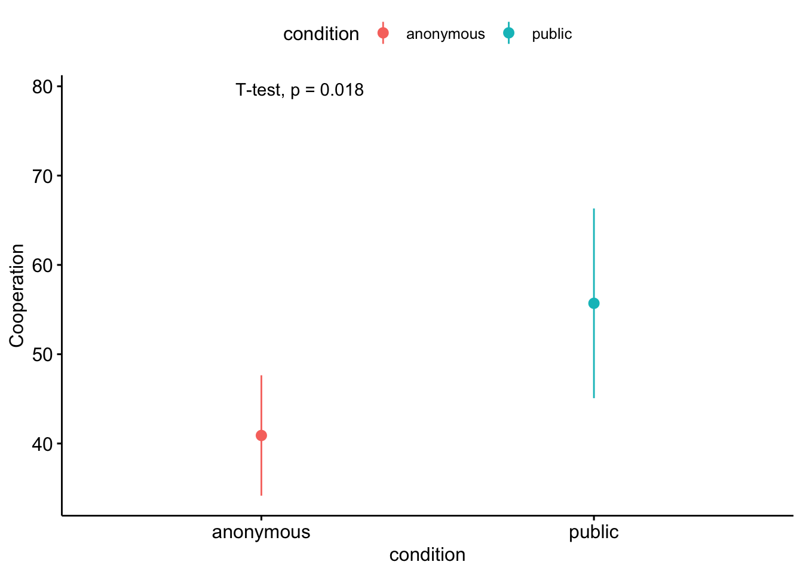
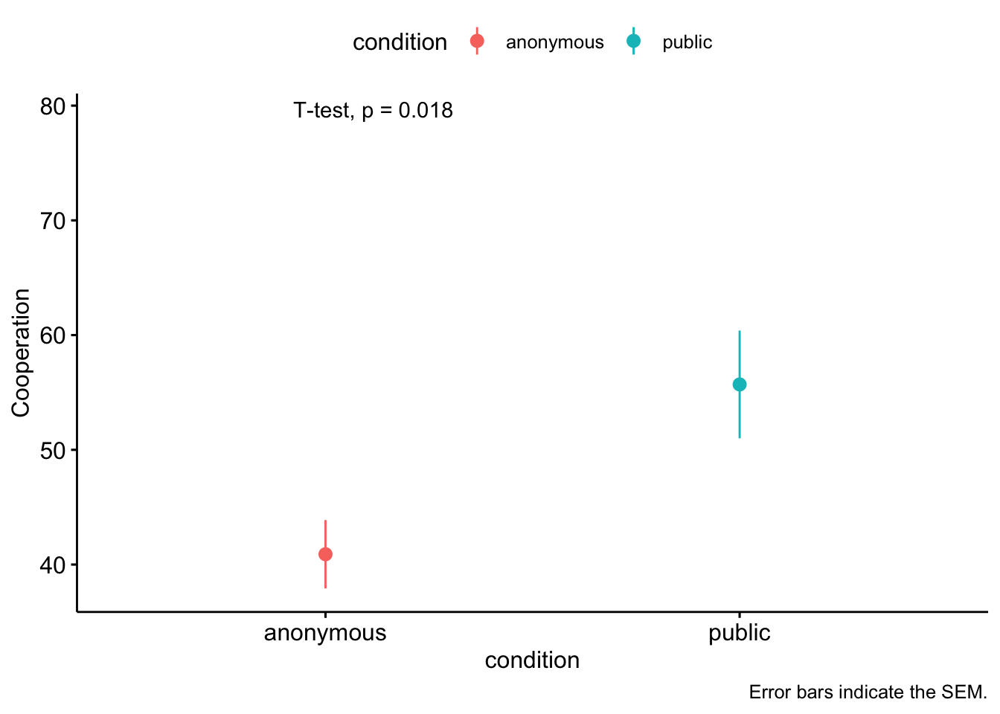

Today we will be analyzing data from Fox and Guyer’s (1978) anonymity and cooperation study again. The data is included in the {carData} package and you can see information about the data set using ?Guyer. Twenty groups of four participants each played 30 trials of the the prisoner’s dilemma game. The number of cooperative choices (cooperation) made by each group were scored out of 120 (i.e., cooperative choices made by 4 participants over 30 trials). The groups either made decisions publicly or privately (condition) and groups were either comprised of all women or all men (sex).
Run the following code to load the data into your global environment.
# load data data <- Guyer# take a look at the datahead(Guyer)
cooperation condition sex
1 49 public male
2 64 public male
3 37 public male
4 52 public male
5 68 public male
6 54 public female
Last time we wanted to compare the mean cooperation level to an experimenter specified level (50% cooperation).
Now, let’s ask a new research question: does whether the decision was made publicly or anonymously have an effect on people’s cooperation levels? For this case, we will use an independent samples t-test, which is used to compare the means of two independent samples.
The null and alternative hypotheses:
The null hypothesis would be:
\[H_{0}: \mu_1 = \mu_2\]
The alternative hypothesis would be:
\[H_{1}: \mu_1 \neq \mu_2\]
Assumptions
The assumptions include…
Normality: Assume that both population distributions are normally distributed.
Independence: Assume that the observations within and between groups are independent of each other.
Homogeneity of variance: Assume that the population standard deviations of both populations are equal. If you violate this assumption, use Welch’s t-test (which is actually the default in R).
Sampling Distribution of Differences Between Means
Another way of stating the null hypothesis is that, if the two population means are equal, than the difference between the two population means (population mean 1 minus population mean 2) is zero, as shown below:
\[H_{0}: \mu_1 - \mu_2 = 0\]
Remember the sampling distribution of means is used to represent the results we would expect to obtain if the null hypothesis is true.
For an independent samples t-test, the sampling distribution is a t distribution that represents all the possible sample mean differences we could expect to obtain if we randomly obtained samples from two populations with equal population means and calculated the difference between each pair of sample means and plotted those sample mean differences in a distribution.
Standard Error for Student’s t-test
We’ll first talk about how to calculate standard error of the sampling distribution if performing a student’s t-test, which assumes that the population standard deviations are equal.
The standard error of the difference, aka the standard deviation of the sampling distribution of differences between means, is calculated as:
For student’s t-test (which assumes the standard deviations of the two populations are equal), \(\hat{\sigma_{p}}\) is the pooled estimate of the population standard deviation and is calculated as:
For an independent samples t-test, the null hypothesis states that the means of the two populations being compared are equal. Another assumption that student’s version of the independent samples t-test makes is that the standard deviation of the two populations are equal. The pooled estimate of the population standard deviation is a weighted average of the two samples’ estimates of their population standard deviations.
The degrees of freedom for student’s t-test are N1 + N2 - 2.
Standard Error for Welch’s t-test
If you have reason to think that the homogeneity of variances assumption has been violated, you should instead perform welch’s t-test, which does not make this assumption. The main difference between welch’s t-test and student’s t-test is in how the standard error of the difference is calculated. For welch’s t-test, you calculate it as:
\[\sigma_{d} = \sqrt{(\frac{\hat{\sigma_{1}^{2}}}{N_{1}} + \frac{\hat{\sigma_{2}^{2}}}{N_{2}})}\] This measure of standard error will be slightly larger than the measure of standard error using student’s t-test, and thus this is a more conservative test (because it will produce a smaller t-test).
The degrees of freedom for welch’s t-test are:
The Independent Samples t-Statistic
The t-statistic for the independent samples t-test is the difference between our two sample means divided by the standard error of the difference.
Which will express, in standard error units, how far away our actually obtained sample mean difference is from the mean of our sampling distribution of differences between means (that represents all the sample mean differences we would expect if the null were true), which lets us see how unlikely our results would be if the null hypothesis is true.
Descriptive Statistics
First, let’s get descriptive statistics for each condition to see what’s going on. We can get the descriptive statistics separately for the two conditions being compared by using the group_by() function.
# A tibble: 2 × 4
condition n mean sd
<fct> <int> <dbl> <dbl>
1 anonymous 10 40.9 9.42
2 public 10 55.7 14.8
Conducting Independent Samples t-Test in R
Option 1: t.test()
Student’s t-test
As with the one-sample and paired t-tests, we can use the t.test() function from the the built-in {stats} package to conduct an independent samples t-test.
Two Sample t-test
data: cooperation by condition
t = -2.6615, df = 18, p-value = 0.0159
alternative hypothesis: true difference in means between group anonymous and group public is not equal to 0
95 percent confidence interval:
-26.482755 -3.117245
sample estimates:
mean in group anonymous mean in group public
40.9 55.7
The syntax being used here is similar to how you will perform regression models in R. Whatever comes on the left of the tilde (~) is the dependent variable (in this case, cooperation) and whatever comes on the right of the tilde is the independent variable (in this case, condition).
Since we specified var.equal = TRUE in the t.test() function, it calculated a Student’s t-test. If we had specified var.equal = FALSE (the default for both t.test() and independentSamplesTTest()) we would have calculated a Welch’s t-test. Unlike Student’s t-test, Welch’s t-test does not assume equal variances between groups. To test whether you have violated the homogeneity of variances assumption, you can use Levene’s test, as shown below.
Welch’s t-test
Let’s first perform Levene’s test to see if we have violated the homogeneity of variances assumption. A significant Levene’s test indicates a violation.
leveneTest(cooperation ~ condition, data = data, center ="mean")
Levene's Test for Homogeneity of Variance (center = "mean")
Df F value Pr(>F)
group 1 1.9346 0.1812
18
Have we violated the homogeneity of variances assumption?
Now, let’s perform Welch’s t-test by setting var.equal = FALSE.
Welch Two Sample t-test
data: cooperation by condition
t = -2.6615, df = 15.237, p-value = 0.0176
alternative hypothesis: true difference in means between group anonymous and group public is not equal to 0
95 percent confidence interval:
-26.636502 -2.963498
sample estimates:
mean in group anonymous mean in group public
40.9 55.7
In this case, the t-test was the same for both tests because the homogeneity of variances assumption was not violated.
Option 2: independentSamplesTTest()
We can also use the independentSamplesTTest function in the {lsr} package to get the output with Cohen’s d included.
Student’s t-test can be used by setting var.equal = TRUE.
Student's independent samples t-test
Outcome variable: cooperation
Grouping variable: condition
Descriptive statistics:
anonymous public
mean 40.900 55.700
std dev. 9.422 14.848
Hypotheses:
null: population means equal for both groups
alternative: different population means in each group
Test results:
t-statistic: -2.661
degrees of freedom: 18
p-value: 0.016
Other information:
two-sided 95% confidence interval: [-26.483, -3.117]
estimated effect size (Cohen's d): 1.19
Welch’s t-test can be used by setting var.equal = FALSE.
Welch's independent samples t-test
Outcome variable: cooperation
Grouping variable: condition
Descriptive statistics:
anonymous public
mean 40.900 55.700
std dev. 9.422 14.848
Hypotheses:
null: population means equal for both groups
alternative: different population means in each group
Test results:
t-statistic: -2.661
degrees of freedom: 15.237
p-value: 0.018
Other information:
two-sided 95% confidence interval: [-26.637, -2.963]
estimated effect size (Cohen's d): 1.19
Practice
Your turn! What if the research question was ‘do cooperation levels vary by sex?’
t.test(cooperation ~ sex, data = data, var.equal =TRUE)
Two Sample t-test
data: cooperation by sex
t = 0.15244, df = 18, p-value = 0.8805
alternative hypothesis: true difference in means between group female and group male is not equal to 0
95 percent confidence interval:
-12.78236 14.78236
sample estimates:
mean in group female mean in group male
48.8 47.8
Interpretation and Write-Up
Let’s assign the output of the independent samples t-test to an object so we can get APA-style formatted output from it.
Unfortunately, the apa_print() function only works with the t.test() output, and not with the independentSamplesTTest() output. Thus, there will be a few things missing from the output (i.e., M and SD for each condition, measure of effect size).
A proper write-up for our Independent Sample t-test would be:
Cooperation in the public condition (M = 55.70, SD = 14.84) was much greater than cooperation in the anonymous condition (M = 40.90, SD = 9.42), t(18) = 2.66, p = .018, 95% CI [-26.64,-3.12], d = 1.19.
Or, if you want to use the apa_print() output:
Cooperation in the public condition (M = 55.70, SD = 14.84) was much greater than cooperation in the anonymous condition (M = 40.90, SD = 9.42), \(t(18) = -2.66\), \(p = .016\), 95% CI [-26.48, -3.12], d = 1.19.
Plotting an Independent Samples t-test
We can quickly plot our means and 95% confidence interval using the ggerrorplot() function in the {ggpubr} package.
# create plotggerrorplot(data, x ="condition", y ="cooperation", desc_stat ="mean_ci", color ="condition", ylab ="Cooperation") +# add results of the t.teststat_compare_means(method ="t.test")

Change the ‘desc_stat’ parameter if you want to plot a different type of error bar. Make sure to add a caption, so it is clear what you are plotting.
# create plotggerrorplot(data, x ="condition", y ="cooperation", desc_stat ="mean_se", #change to standard errorcolor ="condition", ylab ="Cooperation") +# add results of the t.teststat_compare_means(method ="t.test") +#add captionlabs(caption ='Error bars indicate the SEM.')

Plotting in ggplot using a stats layer
Before when we used ggplot, we provided the data and canvas we wanted to plot and then added layers of geoms:
Sometimes you also want to plot some sort of transformation of your data. One way to do that is with stats layers. Here we want to plot summary statistics (mean and CI), so we’ll use ‘stat_summary’:
ggplot(data, aes(x = condition, y = cooperation)) +#create canvasstat_summary(aes(color = condition), fun = mean, #specify a function to run on your datageom="point") +#here is where you specify what geom to usestat_summary(aes(color = condition), fun.data = mean_ci, #specify a function to run on your datageom="errorbar", #here is where you specify what geom to usewidth = .2) +#here is where you make the error bars a normal width papaja::theme_apa(base_family ="Times New Roman") # Makes it APA themed :)
Power Calculations
In order to calculate power, one way is to use the ‘pwr’ package. This package has several similar functions for different statistical tests that follow the same general logic. Today we’ll be using ‘pwr.t.test’. This function takes a sample size (n), an effect size estimate (d), an alpha level (sig.level), and a power (power). The key thing is to fill in a value for 1 of those 4 things and then leave the 4th one out to calculate it. You can then specify the type of t-test (type), and whether it is a two-sided or directional test (alternative).
pwr.t.test(n =10, #sample size (per group)d =1.19, #Cohen's dsig.level = .05, # alpha levelpower =NULL, # Set what you want to calculate to NULL or leave out entirelytype ='two.sample', #independent sample t-testalternative ='two.sided'#two-tailed test )
Two-sample t test power calculation
n = 10
d = 1.19
sig.level = 0.05
power = 0.7112416
alternative = two.sided
NOTE: n is number in *each* group
If that is a good estimate of effect size, then our power was .711, even with such a small sample size.
Unequal sample sizes
In cases where your Ns are unequal, use ‘pwr.t2n.test’
pwr.t2n.test(n1=10, #n of group 1n2=10, #n of group 2d =1.19, #Cohen's dsig.level = .05, # alpha levelpower =NULL, # Set what you want to calculate to NULL or leave out entirelyalternative ='two.sided'#two-tailed test )
t test power calculation
n1 = 10
n2 = 10
d = 1.19
sig.level = 0.05
power = 0.7112416
alternative = two.sided
Practice
Your turn! What sample size do we need to replicate this same effect size with a power of .95?
pwr.t.test(n =NULL, #sample size (per group)d =1.19, #Cohen's dsig.level = .05, # alpha levelpower =0.95, # Set what you want to calculate to NULL or leave out entirelytype ='two.sample', #independent sample t-testalternative ='two.sided'#two-tailed test )
Two-sample t test power calculation
n = 19.36879
d = 1.19
sig.level = 0.05
power = 0.95
alternative = two.sided
NOTE: n is number in *each* group
One more! What effect size do we need to achieve a power of .9, with 30 participants per group, and an alpha level of .01?
pwr.t.test(n =30, #sample size (per group)d =NULL, #Cohen's dsig.level = .01, # alpha levelpower =0.9 , # Set what you want to calculate to NULL or leave out entirelytype ='two.sample', #independent sample t-testalternative ='two.sided'#two-tailed test )
Two-sample t test power calculation
n = 30
d = 1.025559
sig.level = 0.01
power = 0.9
alternative = two.sided
NOTE: n is number in *each* group
Minihacks
Minihack 1 Independent Samples t-test:
An intrepid researcher submits a paper on the difference in coding abilities between Mac and PC users. They argue that PC users are better at coding than Mac users. Coding ability was operationalized with a continuous ‘ability’ metric. Despite a growing fear that you are becoming Reviewer 2, you acquire their data through GitHub to check their analyses.
Run the following lines of code to load the data:
# set seed for reproducabilityset.seed(42)# load datadata_os <-data.frame("id"=1:1e5,"os"=c(rep("pc", 2e4), rep("mac", 8e4)),"ability"=c(rnorm(2e4, 15, 90),rnorm(8e4, 13.9, 1)))
Perform an student’s independent samples t-test on the data (using a built in function).
#Your code here
After running the code, you think that maybe you should have run a Welch’s t-test instead of a Student’s t-test. Investigate your chosen function to figure out how to perform a Welch’s t-test on the data. Do you find a different result? Why or why not?
#Your code here
Let’s give the researchers the benefit of the doubt and assume the variances of both groups are equal. Is there a meaningful difference between Mac and PC users? Use a statistic to provide support for your answer.
#Your code here
Please report the results of the t-test in APA style (Please use as much inline r code as possible).
Plot the data using ggerrorplot(). Does this support your answer to question 3?
#Your code here
Recreate this plot using ggplot. Change the y-axis to a range that makes sense.
#Your code here
7 Use the Cohen’s d to calculate the percentage of overlap between the groups. (See lecture 17)
#Your code here
Your colleague doesn’t care about the comparison between PC and Mac users. They are only interested in PC users and whether they differ from an ability level of 14. What should you tell him? What statistical test supports you?
#Your code here
Minihack 2: POWER
Find a GIF that represents power and display it using RMarkdown.
You are planning on running a fourth version of a study comparing how tall plants grow after listening to the Beatles or Mozart when they were seedlings. Previous versions of the study found a Cohen’s d of .1, .6, and .2. You want to replicate this study with a pea plant, but don’t expect pea plants to differ from other plants. How many plants should I plan on including if I want a power of at least .8?
#Your code here
Whoops! I forgot to mention that this a design where pairs of genetically identical plants are sorted into the two conditions. How many pairs of plants do I need?
#Your code here
Write code to extract the sample size needed (round up) and display it embedded in an explanation.
#Your code here
Minihack 3: Trouble Shooting
My advisor told me that I had multiple errors in my code. She told me the line numbers where the errors are, but she thought it would be a good learning experience for me to try to solve the errors myself. I need your help. Fix the errors in the following chunks of code.
Error 1:
I am trying to calculate post-hoc power, but it keeps giving me a strange error message???
pwr.t2n.test(n1=30, #n of group 1n2=20, #n of group 2d = .5, #Cohen's dsig.level = .05, # alpha levelpower =NULL, # Set what you want to calculate to NULL or leave out entirelytype ='two.sample', #independent sample t-testalternative ='two.sided'#two-tailed test )
Error 2:
I prefer t.test() over independentSamplesTTest() because I’m an R purist, and I wanted to calculate a Cohen’s d value using the t2d() function in the {psych} package. I don’t think it is working properly. I have a t-statistic of 5.12and the sample sizes for my two groups are 15 and 22.
I was trying to plot my data from the first minihack, but I can only see part of my error bars, I want to see all of it.
ggplot(data_os, aes(x=os, y=ability)) +#create canvasstat_summary(fun.data = mean_ci, #specify a function to run on your datageom="errorbar") +#here is where you specify what geom to use stat_summary(fun = mean, #specify a function to run on your datageom="bar", #here is where you specify what geom to usefill='blue') +# add results of t.teststat_compare_means(method ="t.test") +coord_cartesian(ylim=c(12,17))